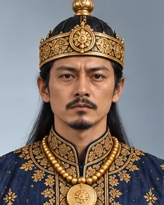

Sujinphaa (Arjun Konwar)
সুজিনফা
1675–1677 · Twenty-sixth Ahom king

Grandson of Pratap Singha, installed by Atan Burhagohain; deposed and died by suicide.
- Tai name
- Sujinphaa
- Hindu name
- Arjun Konwar
- Also called
- Dihingia Roja II
- Family
- Grandson of Pratap Singha
- Fate
- Deposed; died by suicide
Record confidence: medium.
Sources
Open interactive profile
Related scenes